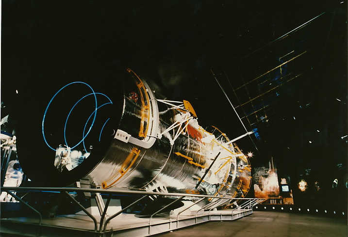
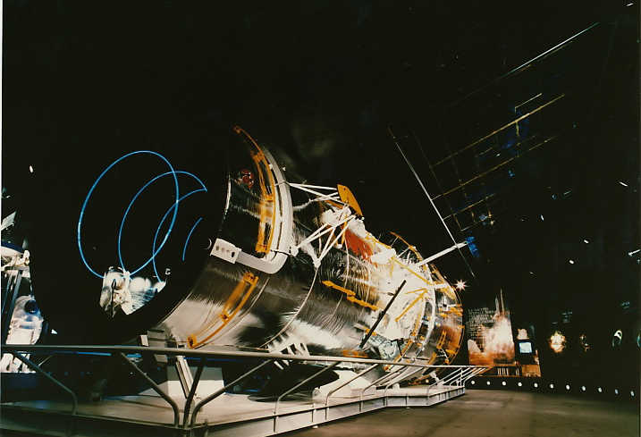

At the Museum - About the Hubble Traveling Exhibit
The Hubble Traveling Exhibit immerses visitors in the magnificence and mystery of the Hubble mission and introduces the James Webb Space Telescope. The exhibit features a scale model of the Hubble Space Telescope as well as several “satellite” units that not only provide viewers with a hands-on experience with the same technology that allows Hubble to gaze at distant galaxies, but also feature Hubble’s contributions to the exploration of planets, stars, galaxies and the universe. Exhibit viewers will learn of the various instruments aboard the telescope and the role that each of them plays in providing exciting new images and discoveries. Observers will also get a glimpse into the various hurdles that Hubble has faced in its career and the role that astronauts have played in repairing and servicing the satellite. The exhibit contains images and data taken by Hubble of planets, galaxies, regions around black holes and many other fascinating cosmic entities that have captivated the minds of scientists for centuries. Experience the life and history of the Hubble Space Telescope through this interactive and stunning exhibit, provided free of charge to any organization willing to share in the splendors of its discoveries.
 

The Hubble Traveling Exhibit is a 2,200-square-foot exhibit that immerses visitors in the magnificence and mystery of the Hubble mission and introduces the James Webb Space Telescope. The exhibit features a scale model of the Hubble Space Telescope as well as several “satellite” units that not only provide viewers with a hands-on experience with the same technology that allows Hubble to gaze at distant galaxies, but also feature Hubble's contributions to the exploration of planets, stars, galaxies and the universe. Exhibit viewers will learn of the various instruments aboard the telescope and the role that each of them plays in providing exciting new images and discoveries. Observers will also get a glimpse into the various hurdles that Hubble has faced in its career and the role that astronauts have played in repairing and servicing the satellite. The exhibit contains images and data taken by Hubble of planets, galaxies, regions around black holes and many other fascinating cosmic entities that have captivated the minds of scientists for centuries. Experience the life and history of the Hubble Space Telescope through this interactive and stunning exhibit, provided free of charge to any organization willing to share in the splendors of its discoveries. Please note that due to the size and setup time, venues must keep the exhibit on display for 3-4 months. For more information about the many stations of the exhibit, or for information about borrowing the exhibit and exhibit specifications, please visit the navigation links at the top of this page. For more videos that illustrate the exhibit's various stations, please visit the Exhibit Stations section of this website.